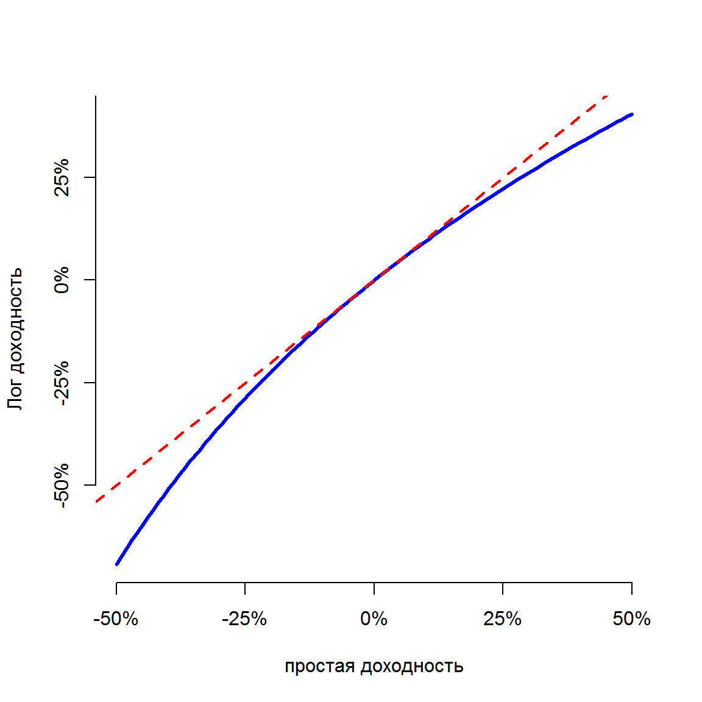

- Курс по выбору – введение в финансовую проблематику и работа с финансовыми данными
- Основная задача – понять общие принципы устройства и работы финансовой системы
- Мы будем говорить как о теории, так и о практике. Оба аспекта важны.
- Отдельный фокус – как это устроено сейчас в России (об этом не говорится даже в хороших в западных учебниках)
- Форма контроля – семинарские занятия и эссе-проект (50%), письменный экзамен (50%).
2018-01-12
Введение в курс
Структура курса
- Понятие финансовых рынков и институтов
- Денежно-кредитная система и центральный банк
- Банковская система.
- Валютный рынок.
- Рынки ценных бумаг и производных финансовых инструментов.
- Денежные рынки.
- Товарные рынки.
- Рынок коллективных инвестиций.
- Пенсионная система.
- Регулирование финансовой деятельности и вопросы финансовой стабильности.
Основная литература
Schoenholtz, K., & Cecchetti, S. (2014). Money, Banking and Financial Markets
Зачем вообще изучать финансы?
- Работа в финансовой сфере - банки, инвестиционные компании и проч.
- Личные финансовые решения – всем придется с этим столкнуться. Необходимо понимать, как устроена финансовая система и учиться принимать рациональные финансовые решения.
- Связь с макроэкономикой. Финансовая система перераспределяет средства от сберегающих агентов – к инвестирующим, способствуя экономическому росту.
- Финансовые инновации – все самое интересное еще впереди. Fintech, blockchain, HFT, bitcoin – какие еще "модные" финансовые термины вы знаете?
Основные принципы финансов вообще
- Время имеет цену
- Риск требует компенсации (доходности)
- Информация – основа принятия решений
- Цены определяются рынками
- Финансовая устойчивость увеличивает благосостояние
1. Время имеет "цену"
- Время влияет на стоимость финансовых инструментов. Процентная ставка выплачивается, чтоб компенсировать кредитору время, в течение которого заемщик будет пользоваться его деньгами.
- Пример заемщика – кредит на покупку автомобиля. Пример кредитора – вклад в банке.
- Процентные ставки являяются фундаментальным понятием в финансах и отражают временную стоимость денег.

2. Риск требует компенсации (доходности)
- Мир по определению полон неопределенности. Поэтому рациональный индивид принимает на себя риски только если будет вознагражден.
- В финансах это вознаграждение осуществляется в форме непосредственных платежей: больше риск – больше платеж.
- Управление риском означает, что вы рассматриваете весь спектр возможных исходов. К примеру, вы можете отказаться от некоторых видов риска, снизить другие – заплатив кому-либо и жить с оставшимися рисками. Пример управления риском - страховка на автомобиль.
- Финансовая система помогает управлять рисками.

3. Информация – основа принятия решений
- В современном мире люди собирают информацию прежде, чем принимают решения. Чем более важно решение, тем больше информации мы собираем.
- Сбор и переработка информации для того, чтобы принять решение – основа финансовой системы.
- Пример. Каким образом банк принимает решение о выдаче кредита?

4. Цены определяются рынками
- Понятие рынка лежит в основе современной экономической системы.
- Финансовая система собирает информацию от большего количества участников, аггрегирует ее в ценовые стимулы, которые определяют, что ценно, а что – нет.
- Финансовая система, определяя цены на стоимость кредита, стоимость акций и проч. – выступает основой распределения капитала в современных экономиках.
- Развитая и эффективная финансовая система способствует экономическому росту и росту благосостояния.

5. Устойчивость улучшает благосостояние
- Большинство из нас предпочитает стабильные доходы изменяющимся.
- Стабильность является предпочтительной характеристикой и для финансовой системы.
- Обеспечение экономической и финансовой стабильности – одна из из основных задач центральных банков.
- Стабильная экономика растет быстрее, чем нестабильная – результаты исследований.

Основные части финансов
- Деньги
- Финансовые инструменты
- Финансовые институты
- Финансовые рынки
- Регулирующие органы
- Центральный банк (денежные власти)
Деньги
- Деньги могут обозначать разное – в зависимости от контекста
- Деньги – это актив, который повсемество принимается в оплату товаров и услуг или для выплаты долга. Обычно это закреплено законодательно.
- Основные функции денег – 1) средство платежа 2) единица измерения 3) мера богатства
- Раньше деньги повсемествно имели внутреннюю стоимость (серебро, золото, что-то другое). в настоящее время деньги не обеспечиваются внутренней стоимостью. Позже мы выясним, в чем достоинства и недостатки каждого варианта.
- Подробнее – в следующей лекции
Финансовые инструменты
Примеры финансовых инструментов, которые обеспечивают сохранение стоимости во времени:
- Банковский вклад
- Облигации – форма публичного займа.
- Акции
Примеры инструментов, которые обеспечивают перенос риска:
- Страховка
- Фьючерсный контракт
- Опцион
- Своп
Финансовые рынки
- Финансовые рынки – это места, на которых финансовые инструменты покупаются и продаются.
- Финансовые рынки обеспечивают несколько основных функций :
- обеспечивают ликвидностью участников
- аггрегируют и обеспечивают передачу информации
- обеспечивают распределение риска
Структура финансовых рынков:
- Первичный рынок или Вторичный рынок
- Централизованная площадка (биржа) или OTC (over-the-counter)
- Долговой или Фондовой или Производных инструментов
Финансовые институты
Специализированные финансовые институты снижают транзакционные издержек функционирования финансовой системы.
Основные типы финансовых институтов:
- Банки – принимают вклады и выдают кредиты
- Страховые компании – принимают страховые премии в обмен на принятие риски определенных событий (страхование имущества, страхование жизни)
- Пенсионные фонды – обеспечивают инвестирование средств участников в ценные бумаги и другие активы.
- Прочие участники рынка ценных бумаг (брокеры, управляющие компании, паевые инвестиционные фонды - ПИФы, хедж-фонды, фонды private equity)
- Государственные финансовые компании (банк развития - ВЭБ, поддержка ипотечного рынка - Агентство по ипотечному жилищному кредитованию (АИЖК), экспортное страхование - ЭСКАР, венчурное финансирование - РВК, private equity – Роснано )
Регулирующие органы и центральный банк
- Государственные органы обеспечивают регулирование финансовой деятельности – устанавливают правила и следят за их выполнением.
- Банк России обеспечивает сейчас регулирование финансовой деятельности и выполняет функции центрального банка (концепция мега-регулятора)
- Центральный банк контролирует доступность денег и кредита с тем, чтобы обеспечить низкую инфляцию, экономический рост и стабильность финансовой системы.
- Министерство финансов РФ осуществляет регулирование отдельных сегментов (к примеру, аудиторов), обеспечивает регулирование в сфере бухгалтерского учета и отчетности (ПБУ - положения о бухгалтерском учете)
- Концепция мега-регулятора
Кредит неизбежен
- Кредит презирался большую часть человеческой истории - "ростовщичество" и прочее. Это сохраняется до сих пор (к примеру, в исламе запрещен кредит)
- Однако кредит в той или иной форме также присутствует на протяжении человеческой истории.
- Развитие кредитных отношений способствовало более быстрому экономическому развитию протестанстких стран по сравнению с католическими ("Протестанская этика и дух капитализма" Макса Вебера).
- Процентные ставки и стоимость кредита оказывают большое влияние практически на всех - правительства, компании, физические лица.
Будущая стоимость (future value)
Рассмотрим подробрее принцип "Время имеет стоимость".
Будущая стоимость – стоимость инвестиции, сделанной сегодня, на определенную будущую дату.
\[ FV = PV + PV i = PV (1+i) \] \[ 1000 + 1000 (0.1) = 1100 \] или обобщив для нескольких периодов:
\[ FV_n = PV (1+i)^n \]
Капитализация процентов
Вопрос. Если вы положите 100 рублей на 3-летний вклад по ставке 10%, сколько вы получите денег через 3 года?
| Лет | Расчет | Стоимость |
|---|---|---|
| 1 | \[100(1.1)\] | \[110\] |
| 2 | \[100(1.1)^2\] | \[121\] |
| 3 | \[100(1.1)^3\] | \[133,10\] |
Вопрос. Какая будет сумма, если проценты начисляются не в конце каждого года, а ежемесячно?
Сложные проценты не "в годах"
Формула работает для любых периодов, просто нужно, чтобы \(i\) и \(n\) имели одинаковую размерность! Необходимо трансформировать годовую ставку – в месячную.
Пусть \(i^m\) – процентная ставка в месяц, а n – количество месяцев.
тогда итоговая сумма при ежемясчном начислении будет определяется как
\[ (100) (1 + 0.1/12)^{12} = 110,47 \]
Непрерывно начисляемые доходности (сontinously compounded returns)
| Начисление | Платежей | % за период |
|---|---|---|
| Ежегодно | 1 | 0.1 |
| Полгода | 2 | 0.05 |
| Квартал | 4 | 0.025 |
| Месяц | 12 | 0.0083 |
| Неделя | 52 | \(\frac{0.1}{52}\) |
| День | 365 | \(\frac{0.1}{365}\) |
| \(\infty\) | \(\infty\) |
Непрерывно начисляемые доходности (сontinously compounded returns)
\[ 1105.517 = 1000 e^{0.1} \]
Общая формула для непрерывного начисления
\[ FV = PV e^{r*n} \]
сontinously compounded returns или лог-доходность
\[ r_t = ln \frac{P_t}{P_{t-1}} = log(P_t) - log(P_{t-1}) \]
Лог-доходности примерно равны "обычным" доходностям при небольших значениях ставки, так как
\[ log(1+x) \approx x \]
Сравнение обычной и лог-доходностей

Преимущества лог-доходностей
Лог-доходности аддитивны. Доходность за несколько периодов – это просто суммма доходностей за каждый период.
Пример. Акция Газпрома выросла в цене в 2015 году на 50%, во 2016 году упала на 50%. Какова доходность за период 2015-2016 годов?
Какова будет доходность в лог-доходностях?
Дополнительные преимущества – удобные статистические свойства. Поэтому в исследованиях стандартно используют расчеты в лог-доходностях. Практики финансовых рынках – используют обычные доходности.
Текущая стоимость (present value)
Текущая стоимость - стоимость, "приведенная" по состоянию на сегодня платежа, который должен быть осуществлен в определенный момент в будущем.
\[ PV = \frac{FV}{1+i} \] или для нескольких периодов
\[ PV = \frac{FV_n}{(1+i)^n} \]
Текущая стоимость выше, если:
- Больше стоимость будущего потока платежей \(FV_n\)
- Чем меньше времени до платежа \(n\)
- Чем ниже процентная ставка \(i\)
Текущая стоимость платежа в 1000 рублей
Пример. Можно ли выйти на пенсию в 40 лет?
Предположим, что вы планируете:
- прожить до 85 лет
- Процентная ставка будет составлять 5%
- Вы планируете тратить 2 млн рублей ежегодно
- Мы не учитываем инфляцию
Тогда вам необходимо накопить:
\[ 2 000 000 = PV(1+i)^n \]
\[ \frac{2}{(1,05)^1}+ \frac{2}{(1,05)^2} + ... + \frac{2}{(1,05)^{45}} = 35,54814 \]
Номинальный и реальный уровень процентных ставок
До этого времени мы не учитывали, что уровень цен также меняется со временем. Номинальная доходность не гарантирует сохранение покупательной способности из-за инфляции.
Рельная процентная ставка – номинальная ставка, скорректированная на инфляцию.
Уравнение Фишера определяет связь между номинальным и реальным уровнем процентной ставок
\[ i = r + \pi^e \]
\(\pi^e\) – ожидаемый уровень инфляции в течение рассматриваемого периода (к примеру, срока кредита). + Чем выше ожидаемая инфляция, тем больше будет номинальная процентная ставка.
Инфляция в России и США
Задания по вводной части
- Когда вы обращаетесь за кредитом, вам необходимо ответить на большое количество вопросов. Зачем это делается? Почему эти вопросы должны быть стандартизированными?
- Почему в некоторых странах основной формой привлечения финансирования является банковское кредитования, в других - привлечение средств на рынках капитала (выпуски облигаций и проч.)?
- Если время имеет стоимость, почему банк готов вам предоставить ипотечный кредит на 10 лет по ставке 15%, а потребительский кредит на 1 год - по ставке 30%?
- Чье благосостояние ухудшается при росте процентных ставок, чье – ухудшается?
Задание по временной стоимости денег
- У вас есть вклад на 1000 рублей по ставке 12% на 3 года. Сколько средств будет на нем в конце срока?
- У вас есть выбор между двумя инвестициями. Первая инвестиция принесет вам 35% через 3 года, вторая инвестициям будет приносить вам 1% ежемесячно в течение 3 лет. Какой вариант вы выберете?
- Вы взяли кредит при условии, что процентная ставка в годововом исчислении будет 12% и начисление процентов происходит ежемесячно. Каковая будет эффективная процентная ставка?
- Почему ипотечный кредит в рублях по ставке 12% и ипотечный кредит в евро по ставке 4% могут иметь одинаковый уровень реальной процентной ставки?
Начисление процента
Пусть начисление процента происходит \(m\) раз в год, тогда будущая стоимость через \(n\) лет будет определяться как
$FV_n^m = PV (1+)^{m n} $.
По мере того, как \(m\) увеличивается, будущая стоимость становтится "непрерывно начисляемой":
\(FV_n^m = \lim\limits_{m\to \infty} PV (1+\frac{R}{m})^{m n} = PV e^{R \cdot n}\).
Эффективная годовая ставка
Пусть у нас есть инвестиция, которая приносит 2% в квартал. Тогда простая доходность будет равно 8% (2% умножить на 4). В конце года, 1000 рублей принесет:
\(1000 \cdot (1+ \frac{0.08}{4})^{4 \cdot 1} = 1082,43\)
Эффективная годовая стоимость определяется как:
\[ 1000 \cdot (1+ R_A)= 1082,43\]
тогда \(R_A = 0,082430\).
В общем случае соотношение будет определяться как:
\[ (1+R_A)= (1+\frac{R}{m})^m\]
Эффективная годовая ставка -2
Если мы знаем эффективную ставку \(R_A\), тогда простую ставку мы можем определить как:
$R = m[(1+R_A)^{}-1] $.
При непрерывном начислении это превращается в
\[ (1+ R_A) = e^R \] \[R = ln(1+R_A) \]
Пусть инвестиция приносит перодически 5% каждые 6 месяцев (\(m=2, R/2=0,05\);).